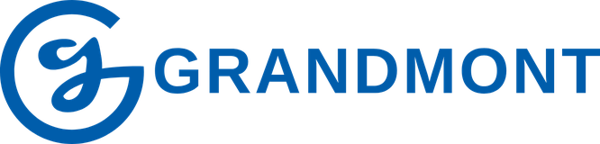
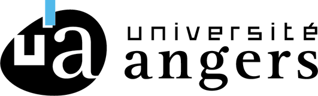
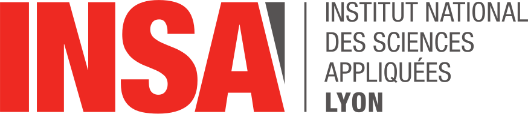

Bac STI2D · Lycée Grandmont, Tours
Là où mon goût pour la technique a pris racine : conception et étude mécanique de systèmes techniques, premières bases de modélisation.
STI2DConceptionModélisation
Génie mécanique · INSA Lyon
Étudiant ingénieur en conception et innovation de produits. Je transforme un besoin en pièce, et je vérifie qu'elle tient avant de la fabriquer.
Étudiant en cycle ingénieur à l'INSA Lyon, spécialité Génie Mécanique Conception et Innovation de Produits (GMCIP), après un BUT GMP parcours Simulation Numérique et Réalité Virtuelle.
Ce portfolio rassemble mon parcours académique et professionnel :
Mon objectif est de mettre en valeur mon évolution, mes compétences et mes réalisations, dans une démarche tournée vers l'ingénierie mécanique et l'innovation durable.

Là où mon goût pour la technique a pris racine : conception et étude mécanique de systèmes techniques, premières bases de modélisation.

Conception, simulation et fabrication mécanique. Parcours SNRV (CAO, FAO, éléments finis), puis 3ᵉ année en alternance chez Corona Médical.

Spécialité GMCIP en alternance chez Corona Médical : technique, gestion de projet, innovation et management.
Quatre projets détaillés, chacun avec son rapport complet.
Chaque compétence est reliée aux projets qui la prouvent.
Une question sur mes projets, une opportunité : écris-moi.